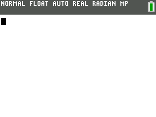

▲
CEleste
The calculator game and C++ port by John “commandblockguy” Cesarz. Lord Funion did not make this game; the editor tooling on this page works with it and its custom-level extensions.
TI-84 PLUS CE · CELESTE CLASSIC PORT + CUSTOM LEVEL ECOSYSTEM
Play Celeste Classic on the TI-84 Plus CE, build your own mountains, package multi-level adventures, and move between the calculator and browser editors without changing formats.
Checking the newest calculator builds…
The calculator game and C++ port by John “commandblockguy” Cesarz. Lord Funion did not make this game; the editor tooling on this page works with it and its custom-level extensions.
Lord Funion’s browser editor for levels and packs: complete logical pieces, room ordering, rotation, validation, import/export, browser autosave, community levels, and original-cartridge preview.
The calculator-native part of the custom-level editor tooling. It makes CELV levels directly on the calculator with terrain and entity palettes, room management, rotation, properties, undo/redo, drafts, and AppVar export.
DOWNLOAD → TRANSFER → CLIMB

Get CEleste above, add CELEDIT if you want to build on-calc, and install the CE C Libraries.
Send the .8xp programs and any custom .8xv levels with TI Connect CE or TiLP.
Run prgmCELESTE. Press MODE on the title screen to browse custom levels, then 2ND or ALPHA to start.
If your calculator OS blocks assembly programs, follow the arTIfiCE instructions first.
CUSTOM LEVEL POLISH
2ND: LEVELS
ALPHA: REPLAY
MODE: TITLE
After the final room, CEleste keeps the completed room behind a summit-style result card and freezes the run timer. You can jump straight back to the custom-level browser, replay the run, or return to the normal title screen.
For packs, time and deaths carry across the pack and the final result is shown as a pack completion.
MAKE → EXPORT → PLAY
Use CEleste Studio on a computer or CELEDIT directly on your calculator. Both target the same CELV custom-level format.
Export a single level or pack as an .8xv AppVar, then transfer it to the calculator alongside CEleste.
On CEleste's title screen, press MODE to open Custom Levels. Pick a level or pack and press 2ND or ALPHA.
Rooms complete through the top edge. The last room now leads to the results screen instead of immediately throwing you back home.
STUDIO QOL
Studio has direct Previous/Next Room controls and [/] shortcuts, plus Ctrl/Cmd+S for project saves. The old unlisted Share Project button is gone; public level discovery stays in the Community Level Browser.
CELEDIT QOL
CELEDIT now marks unsaved edits, lets MODE quick-save a draft, confirms room deletion, and exports without triggering unsafe archive garbage collection while the graphics editor is open.
PROJECT LINKS